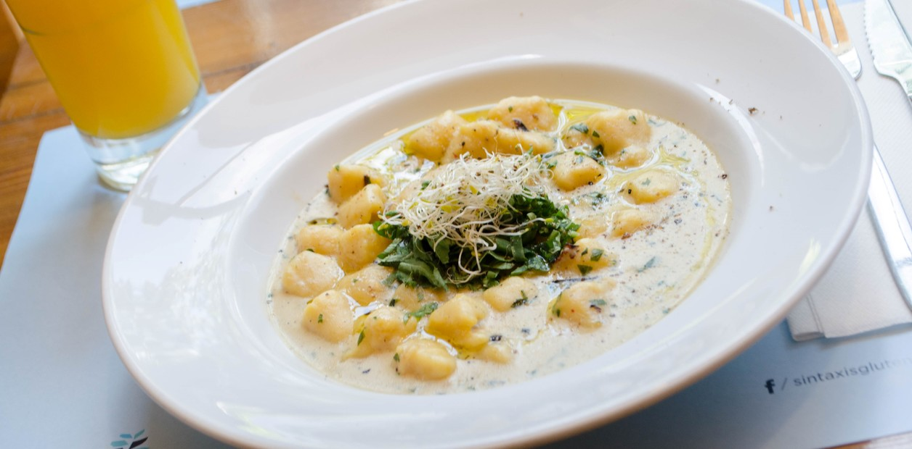
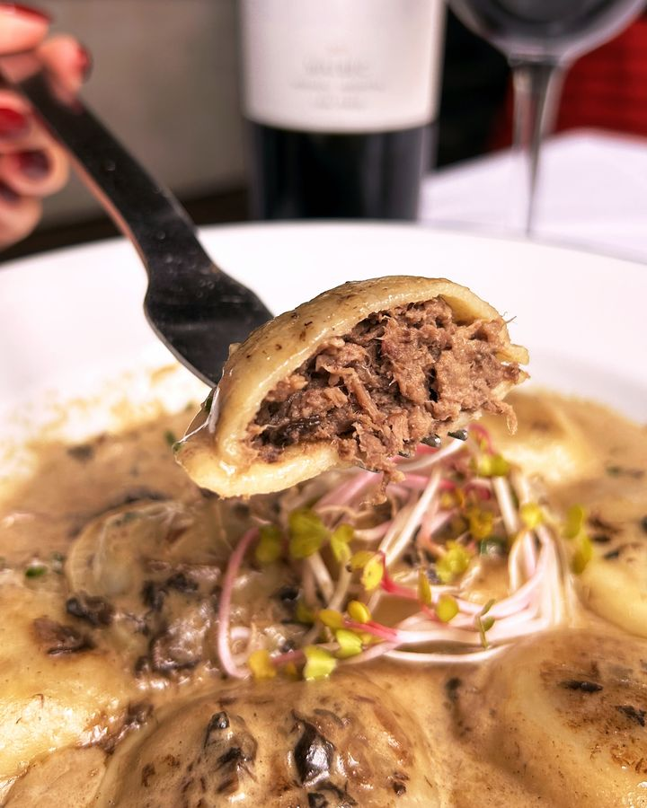
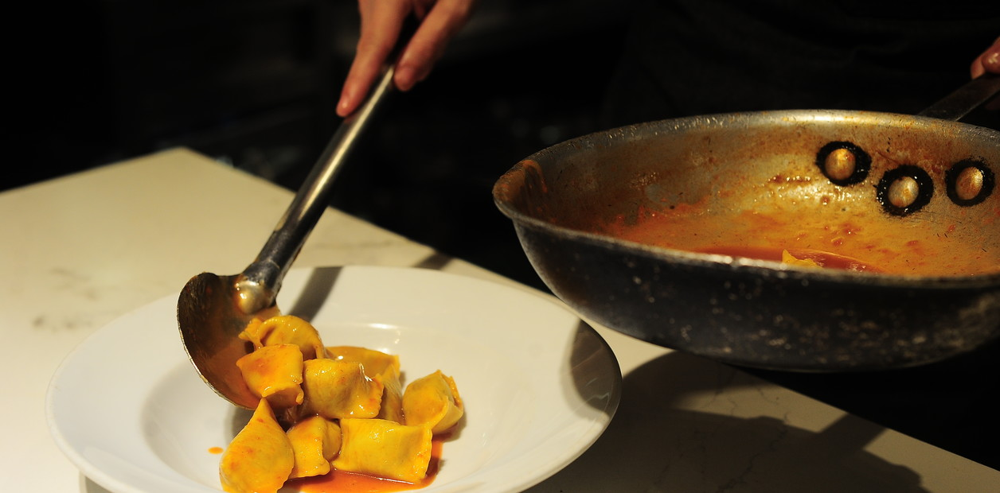

Restaurantes Sin Gluten: Tu guía definitiva para celíacos
Descubre los tres mejores lugares para disfrutar de una deliciosa comida sin preocuparte por el gluten. Nuestra página te ofrece una selección curada de restaurantes aptos para celíacos, con reseñas detalladas y consejos útiles para que puedas comer fuera de casa con total tranquilidad. Explora y encuentra tu próximo destino gastronómico sin gluten entre una variedad de opciones que van desde platos tradicionales hasta innovadoras creaciones culinarias adaptadas a tus necesidades dietéticas.
Sintaxis
Se trata del primer restaurante libre de gluten de nuestro país.
Fue fundado hace diez años cuando su dueña, la empresaria gastronómica Nora Herzovich,
fue diagnosticada de celiaquía y decidió montar un emprendimiento familiar destinado a las personas que deben comer sin TACC.
Sintaxis tiene dos propuestas que conviven en el mismo lugar. "Por un lado está el restaurante, donde hay cocina de autor con platos variados, como pastas, carnes, ensaladas, tartas y empanadas.
Por otro lado, el almacén, con opciones de panadería, como budines, cuadraditos dulces, brownies y panes", explica Danilo da Graca, uno de los hijos de Nora, a cargo del restaurante.
Entre los hits de la carta se encuentran los ravioles de calabaza, los sorrentinos y los ñoquis de batata. "Lo ideal es acompañarlos con una entrada, van muy bien con el trío de tacos, y finalizar con el Rogel, uno de los postres más pedidos", sugiere Danilo.
Calificación:
Precio: $$
Nicaragua 4849 - Palermo.Martes a sábado, de 10 a 23:30hs. Domingo, de 10 a 20hs.
Sintaxisglutenfree
Campobravo
Aunque la especialidad son las carnes, también ranquean alto los sorrentinos de lomo con salsa de hongos secos al vino blanco. "Otro plato muy solicitado es la milanesa con fideos. Y de postre, el New York Cheesecake, elaborado con lima, y endulzado con stevia y salsa de frutos rojos", sostiene Ladoux.
Calificación:
Precio: $$$
Báez 292 - Palermo.
Abierto de martes a domingo, de 12 a 00:30hs.
Campobravoarg
Cucina Paradiso Senza Glutine
A tono con su repertorio culinario, la esencia del menú son las pastas y los risottos, complementados con panes, focacce, panini y más delicias italianas. Todo elaborado a base de harina y almidón de arroz, mandioca y maíz, y harina de quinoa, lino y sorgo. Para una primera visita se puede degustar, de entrada, la burrata con rúcula y portobellos o las croquetas de arroz fritas. Seguir con los cappellaci de zapallo, los agnolotti de osobuco de cordero, o las cintas verdes y amarillas. Para terminar, el tiramisú Paradiso, la torta Caprese o la torta Sogno di Bronte.
Calificación:
Precio: $$$
Arévalo 1538 - Palermo.
Abierto de lunes a domingo, de 9 a 00hs.
Cucina Paradiso Senza Glutine